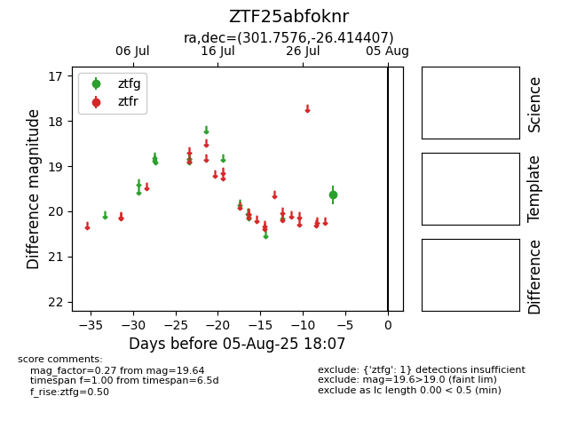

Target ZTF25abfoknr at 2025-08-06 17:27, see:
FINK: fink-portal.org/ZTF25abfoknr
Lasair: lasair-ztf.lsst.ac.uk/objects/ZTF25abfoknr
ALeRCE: alerce.online/object/ZTF25abfoknr
alt names
ZTF25abfoknr (ztf,fink)
coordinates:
equatorial (ra, dec) = (301.7576,-26.41441)
galactic (l, b) = (15.6480,-27.45234)
photometry
last ztfg=19.64
1 ztfg detections
